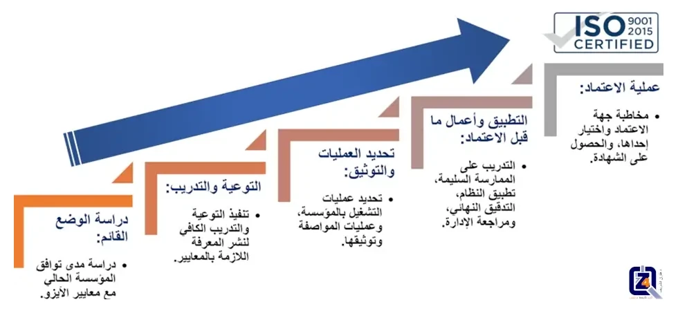

مراحل اعتماد الأيزو

مراحل تطبيق وتقييم نظم إدارة الجودة:
يجب على أي مؤسسة راغبة في تطبيق نظام لإدارة الجودة، إتباع الخطوات التالية:
- عمل دراسة تعقد فيها مقارنة موضوعية بين الوضع القائم للمؤسسة، وبين متطلبات معايير نظام إدارة الجودة، وتُجرى عادة هذه الدراسة بمعرفة مختصين بالإدارة، بالمشاركة مع العاملين بالمؤسسة، ويستخدم فيها أدوات مختلفة منها "التدقيق"، ومنها "المقابلات الشخصية"، ومنها "الاستبيانات"، وفي نهاية الأمر تتكون صورة محددة، عن مدى بعد أو قرب المؤسسة عن نظام إدارة الجودة المستهدف. وتكون أهم المخرجات الأساسية لهذه الدراسة، هو تحديد دقيق للفجوة المحتملة او الموجودة، بين النظام القائم في المؤسسة، ونظام إدارة الجودة المستهدف.
- تقوم الإدارة العليا للمؤسسة وبالمشاركة مع المختصين، بوضع خطة تنفيذية للخطوات والإجراءات، اللازم اتخاذها لتغطية تلك الفجوة التي تم تحديدها في الخطوة الأولى.
- بالتوازي، يجب أن تتبنى وتنفذ المؤسسة برنامجًا تدريبيًا لجميع العاملين بالمنشأة، يهدف إلى التوعية بمتطلبات نظام إدارة الجودة المستهدف تحقيقه، وذلك لإعداد المنشأة نفسيًا وفنيًا للتغيير المطلوب.
- يتم تنفيذ الخطة التنفيذية الموضوعة في الخطوة الثانية من خلال المسئولين والخبراء، وعلى الإدارة العليا للمؤسسة أن تقوم بتوفير الموارد اللازمة لتنفيذ هذه الخطة.
- بعد تنفيذ تلك الخطة، والمفترض مطابقتها لمعايير نظام إدارة الجودة، وبمرور فترة زمنية معقولة، تؤكد استقرار النظام الجديد، تقوم الإدارة العليا للمؤسسة، بتكليف مختصين ذوي خبرة مناسبة سواء من داخل المؤسسة، أو من خارجها، بإجراء تدقيق شامل على تنفيذ النظام الجديد بالمؤسسة، ويتم عادة هذا التدقيق بصورة منهجية، وطبقا لخطة موضوعة سلفا، وبالاستعانة بقائمة تعرف بقائمة المطابقة، والتي تشمل العناصر الرئيسية لمعايير نظام إدارة الجودة، ويكون التقرير إما بالتأكيد على تطابق الوضع القائم مع المعايير، أو بعدم التطابق.
- بالتالي تكون نتائج التدقيق عادة، إما "المطابقة" لمتطلبات معايير نظام إدارة الجودة المستهدف، أو "عدم المطابقة" لمتطلبات معايير نظام إدارة الجودة المستهدف، وهنا يجب اتخاذ الإجراءات التصحيحية المناسبة لإغلاق "عدم المطابقات"، بمعاونة الإدارة العليا للمؤسسة.
- تقوم المؤسسة بتنفيذ العمليات الواردة في الخطوة الخامسة والسادسة بشكل منتظم، وذلك للحفاظ على مستوى أداء مرضي للمؤسسة، وطبقا لمتطلبات نظام إدارة الجودة.
مراحل الحصول على شهادة الأيزو 9001 الخاص بنظام إدارة الجودة:
تمثل المواصفات الدولية الأيزو 9001 بنسختها الأخيرة لعام 2015، متطلبات عامة لنظام إدارة الجودة، والتي تصلح للتطبيق على أي مؤسسة، أيا كان نوعها، أو حجمها، أو تبعيتها، وتمثل هذه المواصفات نظامًا لإدارة الجودة الأكثر تطبيقًا على مستوى العالم، وهي مواصفات دولية صادرة عن منظمة الأيزو الدولية، ويجرى عليها تعديلات دورية، وعند تطبيقها بنجاح، تستطيع المؤسسة الحصول على شهادة تؤكد على التزامها بمعايير هذه المواصفات.
خطوات الاعتماد للأيزو 9001:
تمثل الخطوات السابق ذكرها، الخطوات الأساسية لتأهيل المؤسسة لنيل شهادة الأيزو، يبقى أن نذكر بعض التفاصيل الهامة لمسار الاعتماد:
- تعيين ممثل للإدارة العليا، يكون له السلطة والتفويض، في إنشاء نظام إدارة الجودة، ومتابعته، والاتصال بالجهات الخارجية فيما يخص النظام، ثم يتم الشروع فورًا في عمل دراسة المقارنة التي سبق تفصيلها، طبقًا لمعايير الأيزو 9001، وبالانتهاء من الدراسة، يتم إصدار تقرير يرصد الوضع القائم وتوضيح الفجوة بينه وبين الوضع المستهدف، ويرافق التقرير خطة تنفيذية لعلاج الفجوة المرصودة في الدراسة.
- بدء وتنفيذ برنامج تدريبي توعوي لجميع العاملين يدور حول نظام إدارة الجودة المطابق لمعايير الأيزو 9001.
- تنفيذ الخطة التنفيذية، وتجميع الوثائق، وتعديل كافة عمليات المؤسسة لتتطابق مع معايير الأيزو 9001.
- إجراء تدقيق داخلي، والكشف عن عدم المطابقات، وعلاجها عن طريق الإجراءات التصحيحية المدروسة.
- قيام الإدارة العليا بعمل مراجعات ومتابعات دورية مخطط لها، تراقب فيها تنفيذ المؤسسة للنظام الموضوع، وحل أي مشاكل عالقة تحول دون التنفيذ والممارسة السليمة له، حتى تطمئن الإدارة العليا على مطابقة المؤسسة لنظام إدارة الجودة ومتطلباته الواردة في مواصفة الأيزو 9001.
- تقوم المؤسسة باختيار، والتعاقد مع جهة معترف بها لإصدار شهادات الأيزو، والتي تقوم بالتنسيق مع ممثل الإدارة للمؤسسة، لترتيب توقيتات التدقيق والتفتيش عليها.
- أخيرًا، تقوم جهة إصدار شهادة الأيزو، بالتدقيق على المؤسسة، وفي حال كان التدقيق إيجابي، يتم منح المؤسسة شهادة الأيزو 9001 ، على أن تكون المؤسسة، خاضعة لتدقيق الجهة المانحة الدوري للتأكد من استمرارية مطابقة المؤسسة مع متطلبات المعايير الدولية.
فوائد الحصول على شهادات الأيزو 9001:
- توثيق كافة الإجراءات ونظم العمل وتسجيل جميع عمليات التشغيل بصورة روتينية.
- دفع وتعزيز عمليات التدريب وصقل مهارات العاملين بالمؤسسة.
- إدخال آليات عمل جديدة حسب الحاجة.
- التركيز على رضاء العميل الداخلي والخارجي.
- المطالبة دائما بالتطابق والثبات في كل من معايير المنتج أو الخدمة المقدمة، والأداء العام للعاملين.
- الاعتراف الدولي وتحسين صورة المؤسسة لدى عملائها.
- الوفاء بمعيار معترف به في السوق المحلي والأسواق الدولية.
آلية تأهيل المنشآت للحصول على شهادات الأيزو 9001 في لمحة سريعة:

خطوات التأهيل لنيل شهادة الأيزو
إذا تمكن هذا الشرح السريع لمراحل إعتماد الأيزو من زيادة فضولكم لمعرفة المزيد عن شهادات الأيزو، ومعاييرها، أو أثار هذا العرض المختصر اهتمامكم لتأهيل شركتكم لنيل إعتماد الأيزو، فتفضلوا بالتواصل معنا اليوم، بإرسال بريدًا إلكترونيًا على العنوان التالي:
support@the4z.com